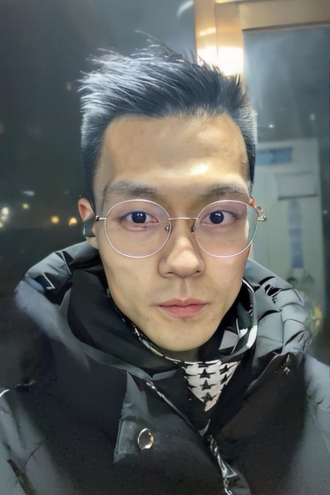
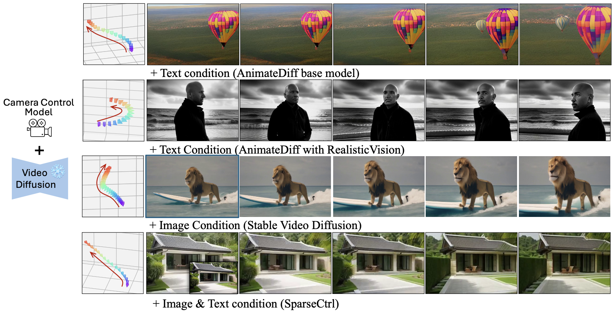
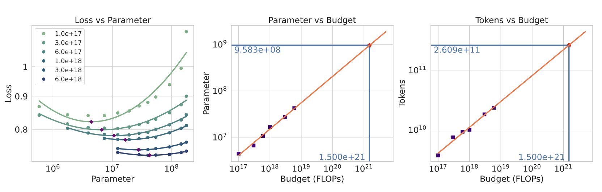
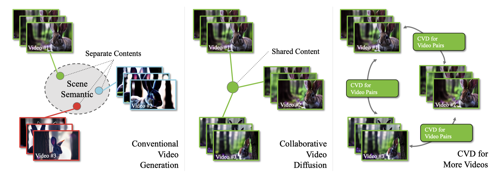
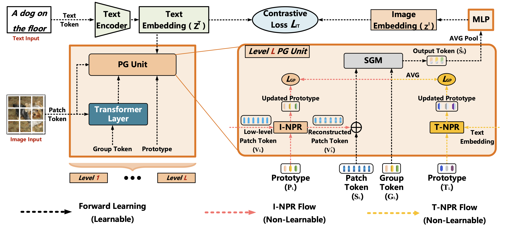
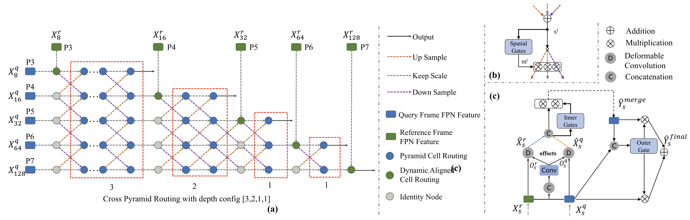
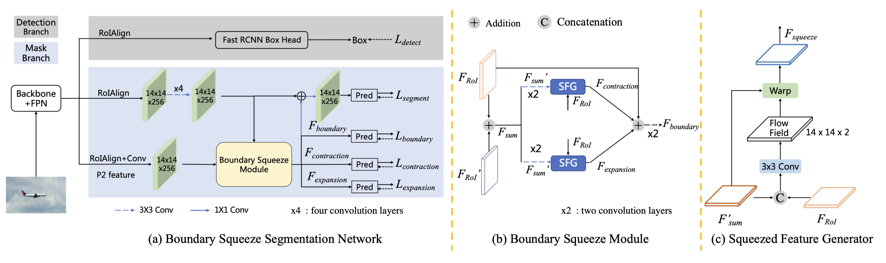
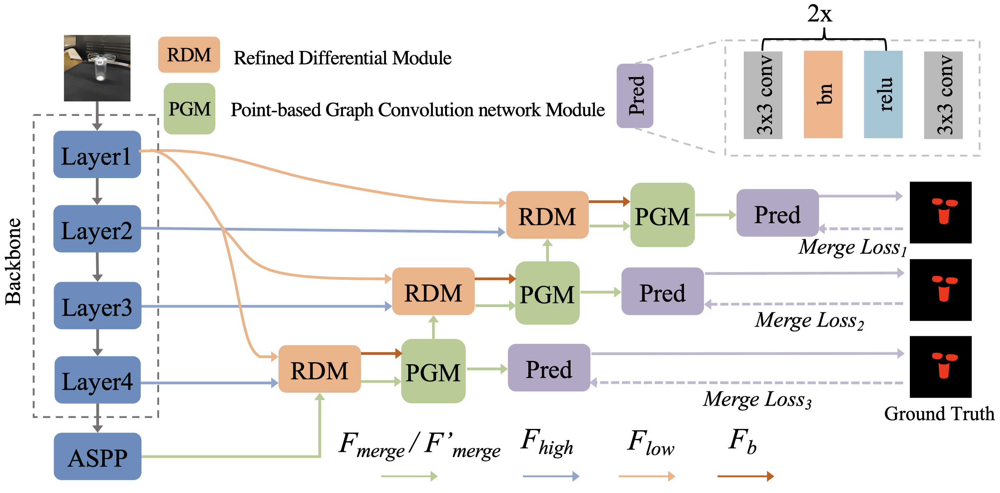
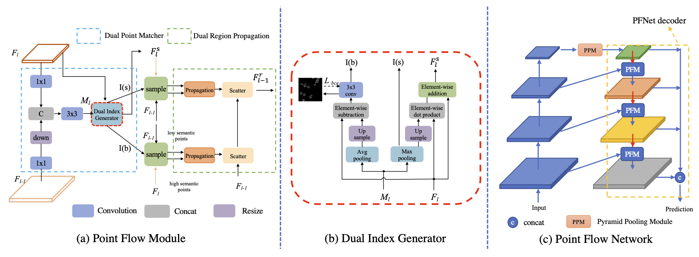

|
Hao He 「何 昊」 I am a second-year Ph.D. student in Multimedia Laboratory in the Chinese University of Hong Kong. My supervisors are Prof. Hongsheng Li and Prof. Xiaogang Wang. Before CUHK, I received my Master's degree from Institute of Automation, Chinese Academy of Sciences in 2022, my supervisor is Prof. Shiming Xiang. I obtained my Bachelor degree from Northwestern Polytechnical University in 2019. My research interests lie in the area of video generation and 3D Diffusion Models. Specifically, I am particularly interested in controlling the camera trajectories during the video genertion process and improving the 3D consistency of the generated videos. |
 |
{kind=link}
Researches |

|
Hao He, Ceyuan Yang, Shanchuan Lin Yinghao Xu, Meng Wei, Liangke Gui, Qi Zhao, Gordon Wetzstein, Lu Jiang Hongsheng Li, ArXiv 2025 [Paper] / [Project Page] |
|  |
Hao He, Yinghao Xu, Yuwei Guo, Gordon Wetzstein, Bo Dai Hongsheng Li, Ceyuan Yang, ICLR 2025 [Paper] / [Project Page] / [Code] |
|  |
Zhengyang Liang, Hao He, Ceyuan Yang, Bo Dai ArXiv 2024 [Paper] |
|  |
Zhengfei Kuang, Shengqu Cai, Hao He, Yinghao Xu, Hongsheng Li, Leonidas Guibas, Gordon Wetzstein NeurIPS 2024 [Paper] / [Project Page] / [Code] |
|  |
Fei Zhang, Tianfei Zhou, Boyang Li, Hao He, Chaofan Ma, Tianjiao Zhang, Jiangchao Yao, Ya Zhang, Yanfeng Wang NeurIPS 2023 [Paper] / [Code] |
|  |
Xiangtai Li, Hao He, Yibo Yang, Henghui Ding, Kuiyuan Yang, Guangliang Cheng, Yunhai Tong, Dacheng Tao TPAMI 2022 [Paper] / [Code] |
|  |
Hao He, Xiangtai Li, Yibo Yang, Guangliang Cheng, Shiming Xiang Yunhai Tong, Lubin Weng IJCV 2022 [Paper] / [Code] |
|  |
Hao He, Xiangtai Li, Guangliang Cheng, Jianping Shi, Yunhai Tong, Gaofeng Meng, Vésronique Prinet Lubin Weng ICCV 2021 [Paper] / [Code] |
|  |
Xiangtai Li, Hao He, Xia Li, Duo Li, Guangliang Cheng, Jianping Shi, Lubin Weng, Yunhai Tong, Zhouchen Lin CVPR 2021 [Paper] / [Code] |
Experiences |

|
Apr. 2024 - Present , Research Intern, Bytedance. Mentor: Ceyuan Yang |
|
Oct. 2022 - Apr. 2024 , Research Intern, Shanghai Artificial Intellience Laboratory. Mentor: Ceyuan Yang and Weidi Xie |
|
|
Mar. 2020 - Mar. 2021 , Research Intern, Sensetime Research. Mentor: Guangliang Cheng and Jianping Shi |
Professional Activities |
|